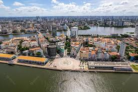
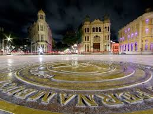
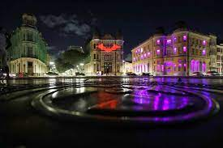
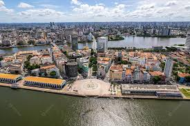
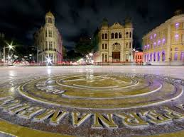
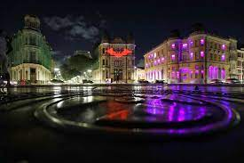

Sobre o Marco Zero
O Marco Zero é o ponto zero de todas as medidas oficiais das distâncias rodoviárias de Pernambuco, assinalado por uma placa colocada no chão da Praça Barão do Rio Branco, no Bairro do Recife.
Esse símbolo, no entanto, é relativamente recente. Na década de 90, o bairro passou por um processo de revitalização que modificou o desenho original da praça, transformando-a em um amplo largo. O antigo piso foi substituído por um grande painel em forma de rosa dos ventos realizado por Cícero Dias, artista pernambucano, e inspirado na tela Eu vi o mundo… Ele começava no Recife, de 1930, do mesmo artista.
Também foi alterada a posição do Marco Zero, o obelisco colocado no centro praça em 1938, pelo Automóvel Clube de Pernambuco, foi deslocado em outro ponto da praça, juntamente como a estátua do Barão do Rio Branco.
Onde fica?
O Marco Zero compreende a região da Praça Barão do Rio Branco, que está situada no município de Recife, no estado de Pernambuco. A atração fica próxima do bairro do Recife Antigo, e está a menos de 10 km de Olinda.
Como Chegar?
Existem muitas formas de chegar ao Marco Zero, uma vez que o local está situado na região Metropolitana de Recife. De carro, basta partir do centro de Recife, através da Rua Riachuelo. O trajeto é curto e dura aproximadamente 20 minutos. Também é possível ir de ônibus, as principais são a 1973, 1992, 1994, 2441, 346, 521 e 642. Além disso, utilizar aplicativos de corrida são ótimas alternativas para andar na cidade.
Por fim, você ainda pode contratar agências de turismo. Assim, é possível aproveitar melhor a região e explorar outras atrações locais.
Galeria de Imagens
 




